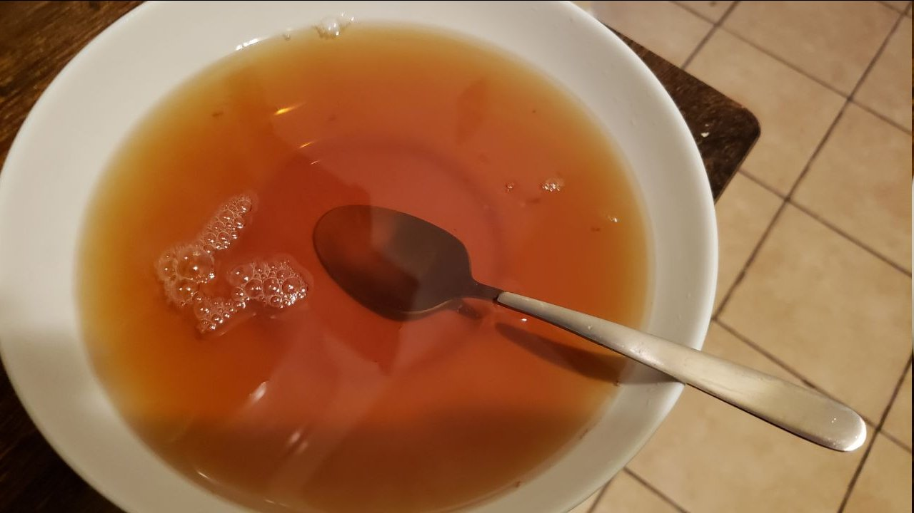

In The Hole

In The Hole by Alton Brown
In The Hole is a recipe devised by acclaimed television food expert Alton Brown and delivered to Twitter User @HTHRFLWRS in a dream.
Ingredients
- 1 Packet of Earl Grey Tea
- 1 Packet of Peppermint Tea
- Salt
Steps
- Brew 1 Mug of Earl Grey Tea
- Brew 1 Mug of Peppermint Tea
- Pour the Earl Grey Tea into a Large Bowl
- Pour the Peppermint Tea into the Large Bowl
- Take special care to ensure you've followed the order, it is Vital
- Salt Vigorously